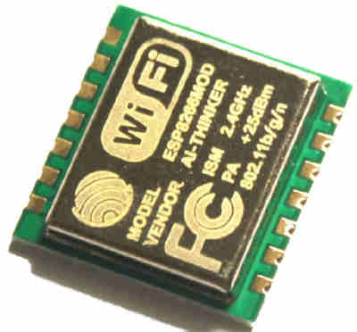

<!doctype html>
<html lang="fr">
  <head>
    <title>Lecture de sonde de courant</title>
    <meta charset="UTF-8">
  </head>
  <body bgcolor=white>

    <table border="0" cellpadding="10">
      <tr>
        <td>
          <!--  
        </td>
        <td>
          <h1>Lecture d'une sonde de courant</h1>
        </td>
      </tr>
    </table>

    <p>Ce serveur permet de lancer l'acquisition de données par une sonde de courant.</p>
    <p>Cliquez sur le lien pour la lancer
    <ul>
      <li><a href="index.html&measure_headless">Lancer une mesure silencieuse</a>
      <li><a href="index.html&measure_LCD">Lancer une mesure avec affichage sur écran LCD</a>.
      <li><a href="index.html&measure_stop">Arrêter la mesure en cours</a>
      <li><a href="index.html&clear_logs">Effacer les mesures faites</a>
      <li><a href="last_measure.html">Afficher le fichier des dernières mesures</a>

    </ul>

  </body>
</html>
